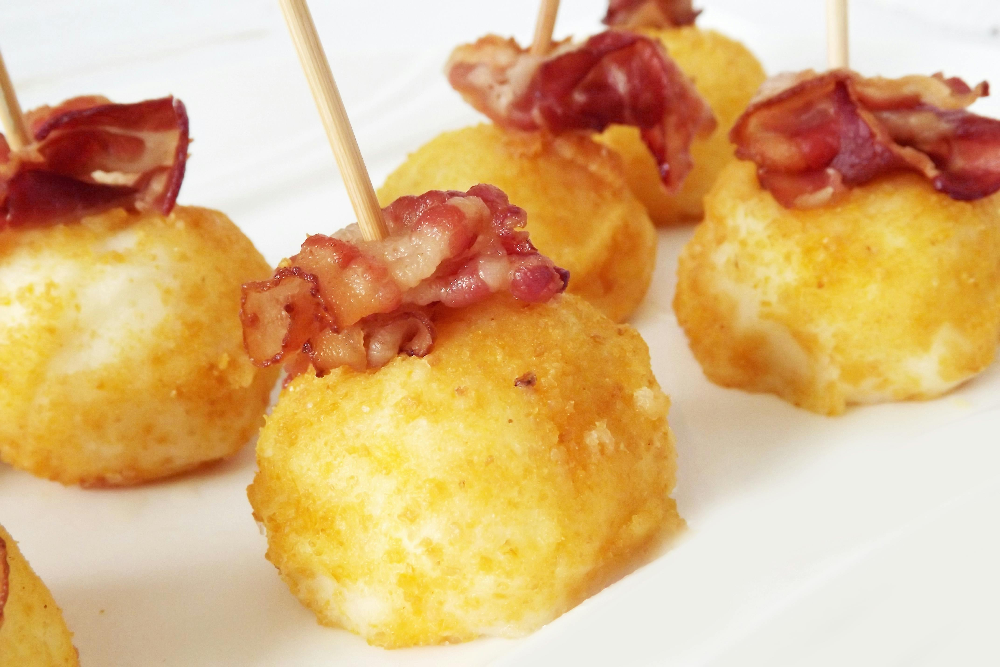

Irish potato cakes with smoked salmon and cream cheese is a delightful starter dish that combines traditional Irish flavors with a touch of elegance. The crispy, golden potato cakes are made from mashed potatoes, seasoned with herbs, and lightly fried to create a crispy exterior while maintaining a soft, fluffy interior. They are topped with smooth cream cheese, which adds a rich and creamy texture, and garnished with delicate smoked salmon for a savory, smoky flavor. The dish is often finished with fresh dill, lemon zest, or capers for added freshness, making it a perfect appetizer for any occasion.